Whistle은 어떤 모델인가요
Whistle은 Cactus Compute가 2026년 10월 2일에 낸 음성 인식 모델이에요. 첫 슬라이드 왼쪽의 큰 숫자 16.9MB가 모델 파일 크기예요. 그 아래 'CPU inference. Timed words. Local tools.'라는 한 줄이 영상 전체의 요약이에요. GPU(Graphics Processing Unit) 없이 CPU로 돌고, 단어마다 시간을 붙이고, 내 컴퓨터에서 쓰는 도구라는 뜻이에요.
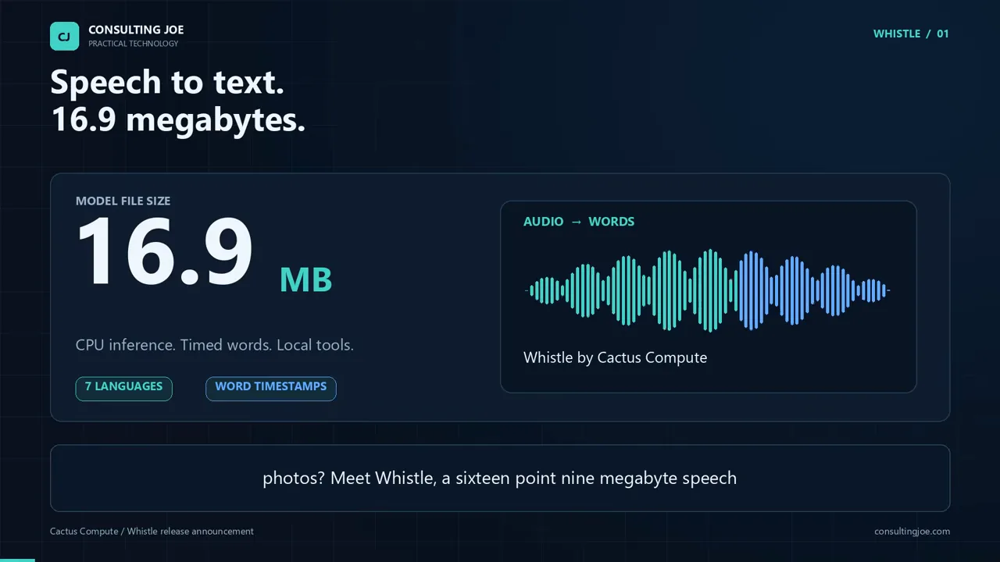
프로젝트 이름은 Whisper, 엔진은 Whistle
발표자 Joe(Joseph Sammarco)는 Whistle을 감싼 작은 파이썬 프로젝트를 만들었어요. 슬라이드 왼쪽 칸이 인식 엔진인 Whistle이고, 화살표 오른쪽이 발표자의 프로젝트 Whisper Speech 2 Text예요. 이름에 Whisper가 들어가서 헷갈리기 쉬운데, 소리를 알아듣는 건 Whistle이에요. 오른쪽 아래 'WHISTLE POWERS THE AUDIO' 배지가 그 점을 짚어요.
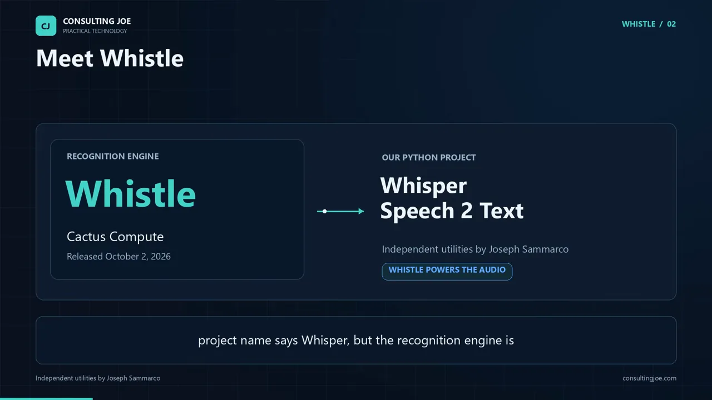
7개 언어와 이름 힌트
지원 언어는 영어, 독일어, 프랑스어, 스페인어, 이탈리아어, 네덜란드어, 폴란드어 일곱 개예요. 한국어는 없어요. 슬라이드 오른쪽 'AUTO DETECT' 배지처럼 언어를 모델이 알아내게 둘 수도 있고, 직접 정해 줄 수도 있어요. 회사 이름이나 제품 코드처럼 자주 나올 말을 미리 넘기면, 발음이 비슷한 단어 사이에서 그쪽을 고르도록 도와요.
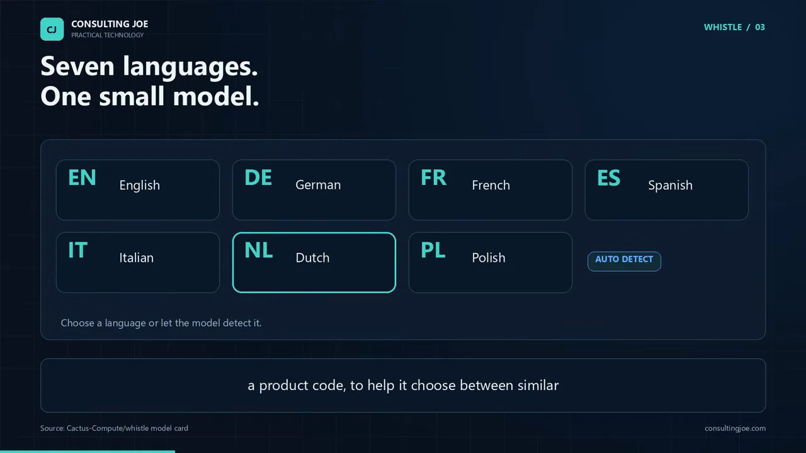
단어마다 붙는 시간
발표자가 이 모델을 '텍스트 상자 이상'이라고 보는 이유가 단어 타임스탬프예요. 슬라이드 왼쪽에는 인식한 단어 Kilo, Echo, Niner, Golf, Delta, Hotel이 파형 아래 한 칸씩 놓여 있어요. 오른쪽 JSON은 실제 프로젝트 결과인데, Kilo라는 단어가 0.16초에 시작해 0.56초에 끝났고 확률이 0.797이라고 적혀 있어요.
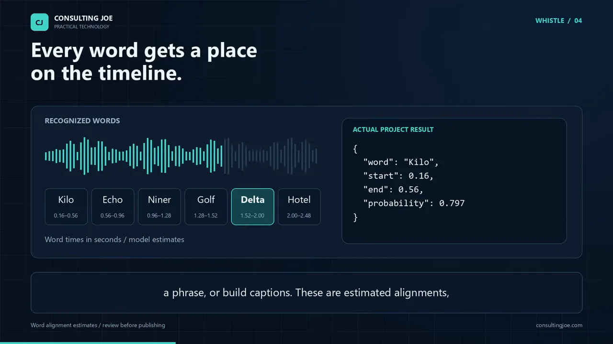
다만 이 시간은 모델이 추정한 정렬이에요. 발표자도 중요한 자막은 사람이 한 번 더 봐야 한다고 못 박아요.
These are estimated alignments, so important captions still deserve a review.
이건 추정한 정렬이라서, 중요한 자막은 여전히 검토가 필요해요.
— 영상 00:34
파이썬 도구로 써 보기
발표자의 저장소는 설치 방법과 테스트에 쓴 파이썬 패키지 버전을 고정해 두었어요. 슬라이드의 명령은 위에서부터 저장소 받기, 가상 환경 만들기, 의존성 설치, 받아쓰기 실행 순서예요. 마지막 줄처럼 WAV(Waveform Audio File Format) 파일 하나를 transcribe.py에 넘기면 돼요.
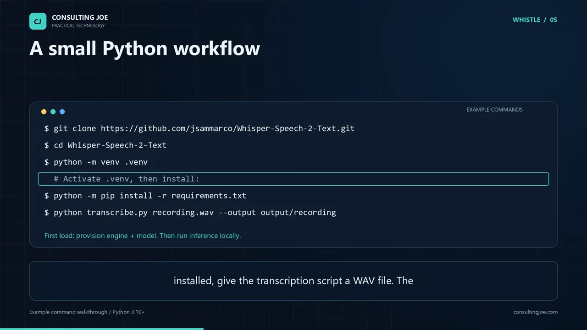
git clone https://github.com/jsammarco/Whisper-Speech-2-Text.git
cd Whisper-Speech-2-Text
python -m venv .venv
# .venv를 활성화한 뒤 설치
python -m pip install -r requirements.txt
python transcribe.py recording.wav --output output/recording녹음 하나에서 나오는 다섯 가지 파일
명령 하나로 다섯 형식이 한꺼번에 나와요. 슬라이드의 다섯 카드가 각각 어디에 쓰는지를 적어 뒀어요.
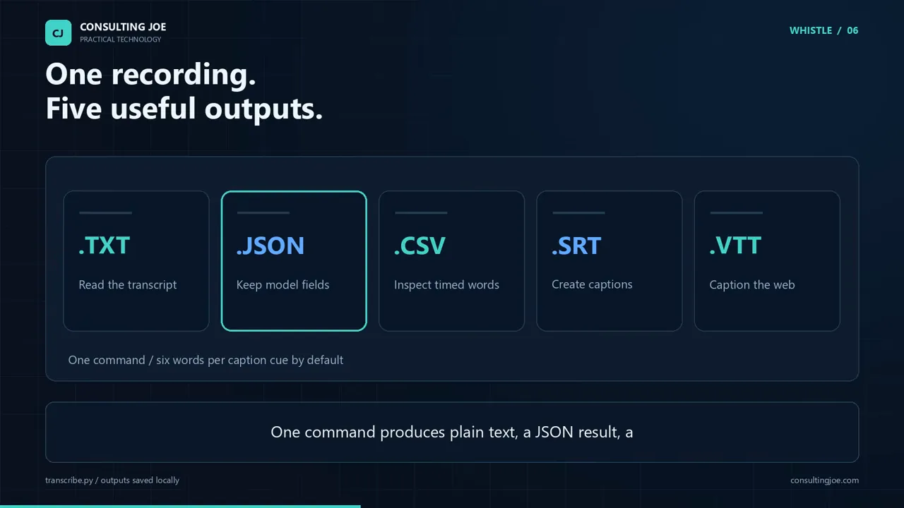
| 형식 | 슬라이드 설명 | 쓰임 |
|---|---|---|
| .txt | Read the transcript | 받아쓴 글만 읽기 |
| .json | Keep model fields | 모델이 준 값을 그대로 보관 |
| .csv | Inspect timed words | 단어별 시간을 한 줄씩 살펴보기 |
| .srt | Create captions | 영상 편집용 자막 |
| .vtt | Caption the web | 웹 플레이어용 자막(WebVTT) |
단어 하나씩 끊는 자막이 필요하면 그 옵션도 있어요. 이미 만든 파일은 덮어쓰기를 직접 고르기 전까지는 건드리지 않아요.
말하고, 멈추면, 받아써요
마이크 스크립트는 슬라이드의 네 칸 순서로 움직여요. 마이크에서 소리를 받고(Capture), 큐에 쌓고(Queue), CPU에서 Whistle로 인식하고(Recognize), 글자와 단어 시간을 내보내요(Export). 말이 잠깐 멈추면 그 구절을 하나로 끊어 받아써요.
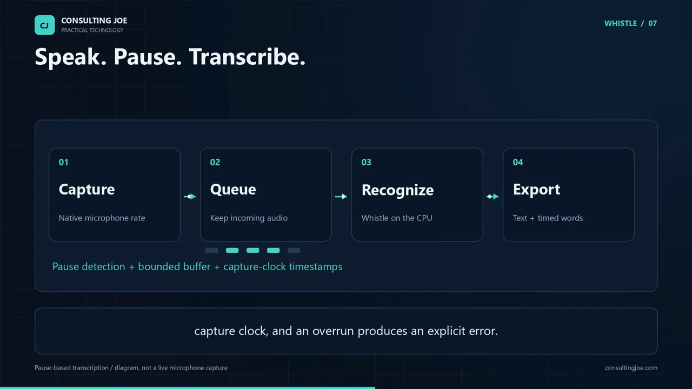
앞 구절을 처리하는 동안 들어온 소리는 바운디드 큐에 쌓여 기다려요. 시간 값은 녹음을 시작한 시점을 기준으로 매겨요. 큐가 넘치면 소리를 조용히 버리지 않고 오류를 분명히 내요. 멈춤 길이와 민감도는 쓰는 마이크에 맞게 조절할 수 있어요.
호출부호 예제: 말을 구조화된 데이터로
발표자는 아마추어 무선을 예로 들어요. 무선에서는 알파벳을 헷갈리지 않게 Kilo(K), Echo(E)처럼 단어로 불러요. 이걸 포네틱 알파벳이라고 해요. 슬라이드 왼쪽의 'Kilo Echo Niner Golf Delta Hotel'이 오른쪽에서 호출부호 KE9GDH로 바뀌어요. 그 아래 process_callsign이 Needle 3가 만든 툴 콜이에요.
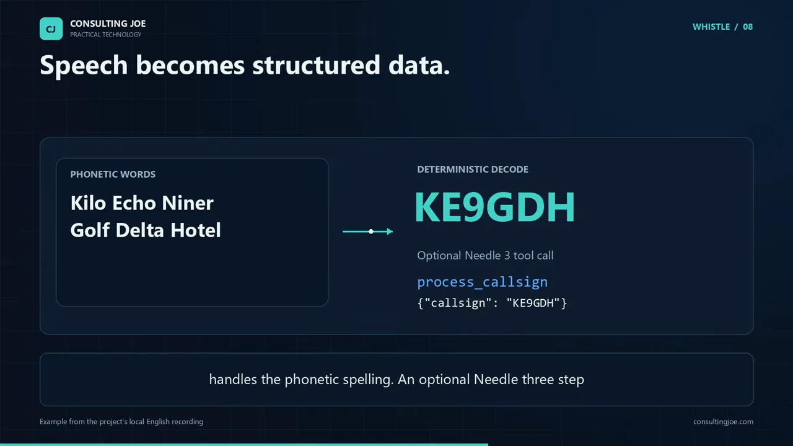
일을 나눈 방식을 한 그림으로 보면 이래요. 단어 인식만 모델이 하고, 단어를 글자로 바꾸는 건 결정적 디코더가 해요. Needle 3 단계는 선택이에요.
flowchart LR A["음성: Kilo Echo Niner Golf Delta Hotel"] --> B["Whistle: 단어 인식"] B --> C["결정적 디코더: KE9GDH"] C -.->|선택| D["Needle 3: process_callsign 툴 콜"] C --> E["화면에 출력해 확인"] D --> E
ESP32에서 돌린 사례
다른 개발자가 Whistle을 ESP32 보드에서 돌리는 모습을 보여 줬어요. 슬라이드 오른쪽처럼 하드웨어, 쓸 수 있는 메모리, 모델 변형, 런타임 포팅에 따라 결과가 달라져요. 맨 아래 주황 글씨가 중요해요. 발표자는 이 보드 빌드를 직접 따라 해 보지 않았어요.
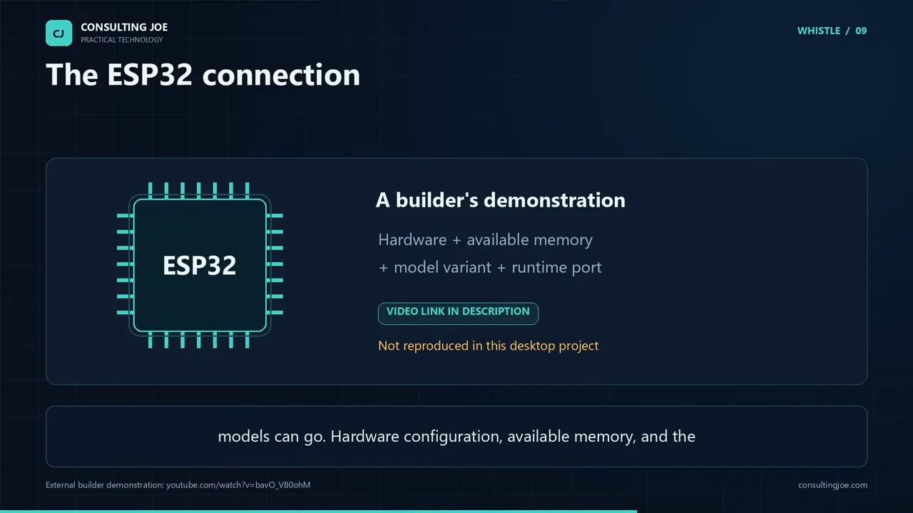
로컬로 돌린다는 것과 확인한 범위
로컬 처리가 쓸모 있는 건 작업 흐름을 예측할 수 있고, 녹음을 내가 쥐고 있고 싶을 때예요. 슬라이드의 세 카드가 이 프로젝트가 지키는 세 가지예요.
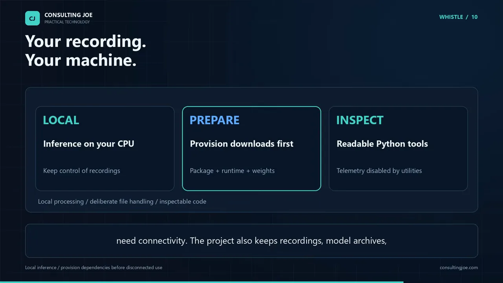
- 'LOCAL' — 인식은 내 CPU에서 해서, 녹음이 내 손을 떠나지 않아요.
- 'PREPARE' — 설치와 첫 다운로드에는 인터넷이 필요해요. 오프라인으로 쓰려면 먼저 받아 둬야 해요.
- 'INSPECT' — 스크립트를 읽어 보고 내 앱에 어떻게 맞출지 정할 수 있어요. 상위 패키지의 텔레메트리는 이 도구들이 꺼 둬요.
녹음, 모델 파일, 만들어진 받아쓰기 결과는 공개 Git 기록에 들어가지 않게 막아 뒀어요. 개인 녹음이 실수로 커밋되는 일을 막는 장치예요.
무엇을 확인했고, 무엇은 아닌가요
발표자는 확인한 범위를 숫자로 밝혀요. 슬라이드의 12는 자동 테스트 수, 6은 영어 샘플에서 시간이 붙은 단어 수, 5는 내보내기 형식 수예요. 그 아래 파란 글씨는 파이썬 3.10·3.12·3.13에서 검사를 통과했다는 뜻이에요.
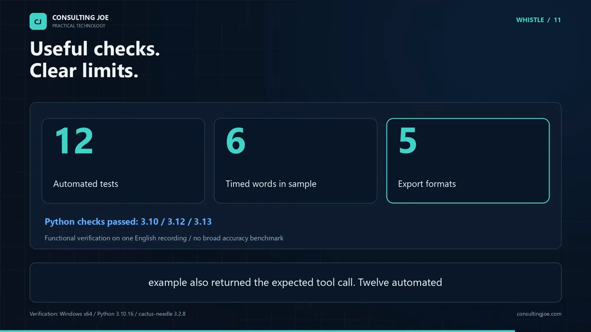
영어 녹음 하나가 단어 6개를 시간과 함께 다섯 형식 모두로 내보냈고, 호출부호 예제도 기대한 툴 콜을 돌려줬어요. 자동 테스트 12개는 보조 함수와 가상의 마이크 흐름을 확인해요. 실제 마이크를 연 테스트가 아니라는 점도 기억해 둘 만해요.
그래서 발표자의 권유는 단순해요. 내용을 잘 아는 녹음으로 시작해서, 나온 단어를 원래 소리와 맞춰 보라는 거예요. 한국어는 지원 언어에 없으니, 한국어 음성이라면 이 모델은 맞지 않아요.